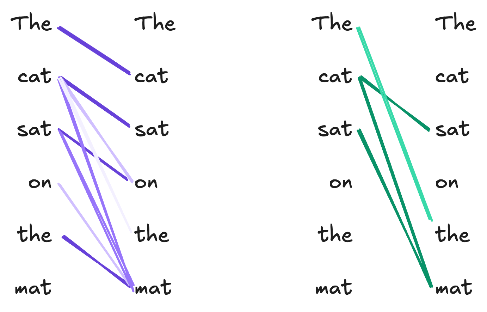
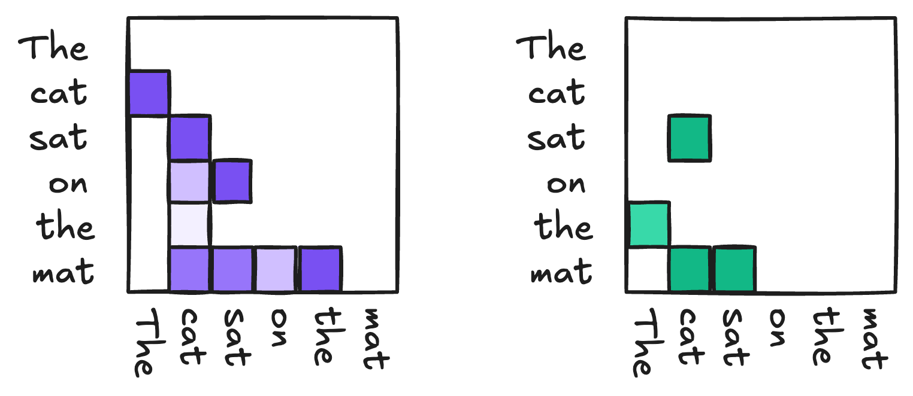
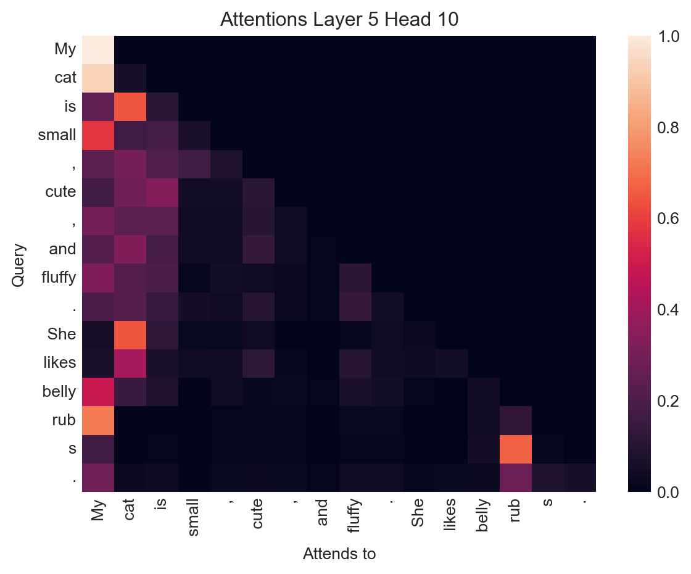
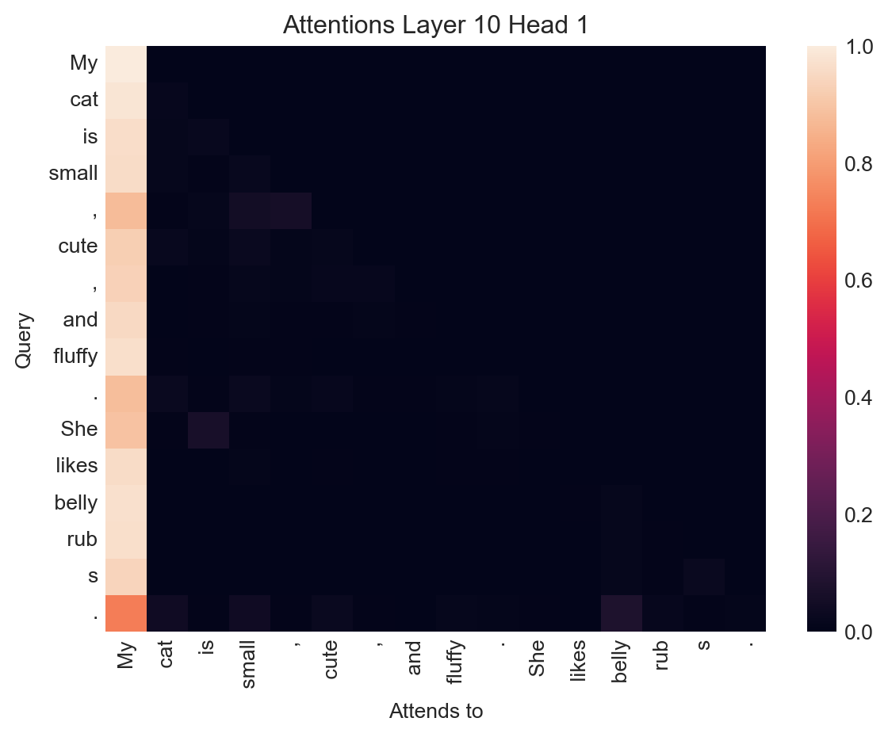
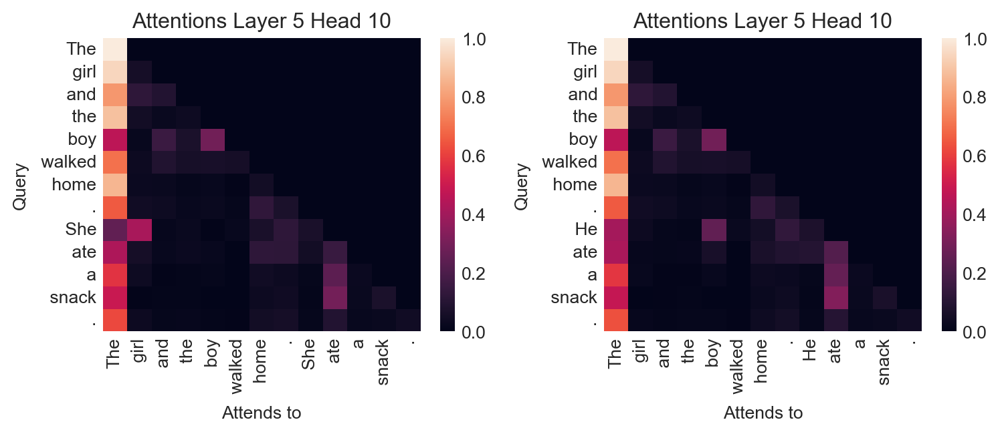
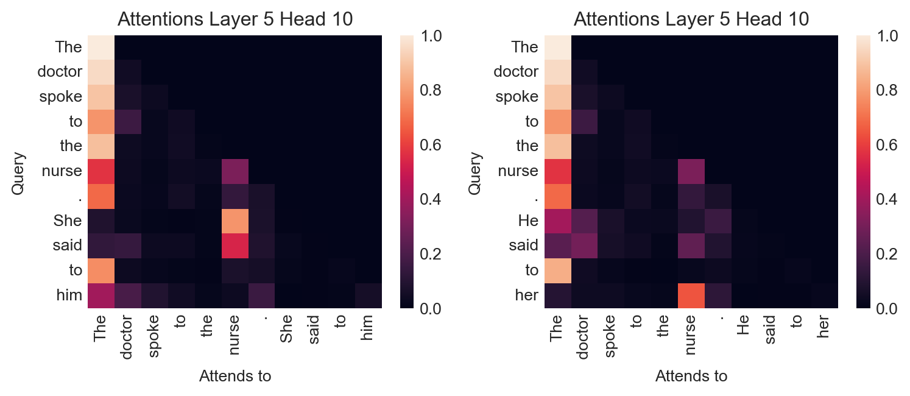

from torch import nn
import torch
class AttentionHead(nn.Module):
def __init__(self, d_model, d_k):
super().__init__()
self.W_q = nn.Linear(d_model, d_k)
self.W_k = nn.Linear(d_model, d_k)
self.W_v = nn.Linear(d_model, d_k)
self.d_k = d_k
def forward(self, x):
Q = self.W_q(x) # Queries
K = self.W_k(x) # Keys
V = self.W_v(x) # Values
# Compute attention scores
scores = torch.matmul(Q, K.transpose(-2, -1)) / (self.d_k ** 0.5)
attention_weights = nn.functional.softmax(scores, dim=-1)
# Compute the output as a weighted sum of values
output = torch.matmul(attention_weights, V)
return output17 The Attention Mechanism
Scalable long-range dependencies in sequence models
Open the live notebook in Google Colab.
Motivation
Last time, we introduced a text-generation model containing a text embedding layer and a feedforward network composed of linear layers. This model was able to generally learn the idea that some tokens should be “near” other tokens, but wasn’t really able to capture the details of order or syntactic dependency in the text. Our model had a fixed context window, with each token inside the context window contributing equally to the prediction of the next token (and each token outside the window being completely irrelevant for prediction). This is somewhat unrealistic. For consider the snippet
My cat is small, cute, and fluffy. She likes belly rubs.
Suppose that we are trying to predict She from the preceding tokens. Intuitively, this prediction makes sense because my cat is a noun phrase in the previous sentence. However, the word cat is not immediately adjacent to She. A model like the feedforward model from last time could have my cat in context, but would treat everything else in context identically:
Here, all the tokens in the context window contribute equally to the prediction, including arguably irrelevant ones like small and fluffy. Our desired behavior looks more like this:
So, we are looking for a model architecture that can flexibly learn long-range dependencies between tokens. Although there are many approaches to this problem, in these notes we’ll use the one which has come to dominate multiple areas of modern deep learning, including language modeling – the attention mechanism.
The Attention Mechanism
Schematically, we’d like to design an architecture in which:
- Tokens can preferentially attend to other tokens within the context.
- Tokens can depend in different ways, depending for example on semantics, syntax, or other relationships.
Here’s an example of how this might look with another simple, cat-themed example. Here, we’ve shown two different ways in which the tokens of the sentence The cat sat on the mat might attend to each other.

Another useful way to view these relationships is as matrices:

Now we’ll formulate a model architecture that can learn these kinds of relationships.
Attention Operates on Embedded Tokens
While it’s often helpful to visualize attention as operating on units of English text, there are actually two units of processing that have to take place before we can pass data to the attention mechanism. First, given a piece of text, we need to tokenize it to obtain a sequence \(t_1, t_2, \ldots, t_n\) of tokens. Then, we need to embed these tokens into a vector space to obtain a sequence of vectors \(\mathbf{x}_1, \mathbf{x}_2, \ldots, \mathbf{x}_n\). The attention mechanism operates on the embedded tokens \(\mathbf{x}_i\). We can collect these vector into a matrix
\[ \begin{aligned} \mathbf{X}= \begin{bmatrix} - & \mathbf{x}_1^\top & -\\ - &\mathbf{x}_2^\top & -\\ & \vdots \\ - & \mathbf{x}_n^\top & - \end{bmatrix} \in \mathbb{R}^{n \times d}\;, \end{aligned} \]
where \(d\) is the dimension of the embedding space. The attention mechanism will take \(\mathbf{U}\) as input and produce a new matrix \(\mathbf{W}\in \mathbb{R}^{n \times d}\) as output, where the \(i\)-th row of \(\mathbf{W}\) is a new vector representation of the \(i\)-th token that incorporates information about which other tokens in the sequence are relevant to it.
So, our attention mechanism is a trainable function from matrices of token embeddings \(\mathbb{R}^{n \times d}\) to \(\mathbb{R}^{n \times d}\):
\[ \text{Attn}: \mathbb{R}^{n \times d} \to \mathbb{R}^{n \times d}\;. \]
Fixed Attention
My exposition in this section is adapted from Bishop and Bishop (2023), Chapter 12.
The simplest kind of map \(\mathbb{R}^{n \times d} \to \mathbb{R}^{n \times d}\) would be a linear map:
\[ \begin{aligned} \mathbf{u}_j = \sum_{i=1}^n a_{ij} \mathbf{x}_i\;, \end{aligned} \tag{17.1}\]
In this expression, we would treat each coefficient \(a_{ij}\) as a parameter that reflects how much the \(i\)th token in the sequence should contribute to the representation of the \(j\)th token. Now, it’s intuitive that (a) we shouldn’t be able to pay negative attention to a token and that (b) if I pay a lot of attention to one token, I must pay less attention others. These motivate the constraints that \(a_{ij} \geq 0\) and \(\sum_{i=1}^n a_{ij} = 1\) for all \(j\).
Self-Attention
Equation 17.1 encodes some reasonable ideas, but it’s also limited – the attention weights \(a_{ij}\) don’t depend on the inputs \(\mathbf{w}_i\) at all. So, for example, we might have the fifth token attending strongly to the second token in every input sequence, regardless of what those tokens are. One way to address this problem is to make the attention weights themselves depend on the input tokens. Two tokens \(i\) and \(j\) are similar in the embedding space if \(\mathbf{x}_i^\top \mathbf{x}_j\) is large. To make sure that the coefficients are nonnegative and sum to 1, we can pass them through a softmax:
The concept of similarity being used here is unnormalized cosine similarity.
\[ \begin{aligned} a_{ij} = \frac{e^{\mathbf{x}_i^\top \mathbf{x}_j}}{\sum_{j' = 1}^n e^{\mathbf{x}_i^\top \mathbf{x}_j'}}\;. \end{aligned} \]
If we let \(\mathrm{SoftMax}: \mathbb{R}^{n\times p} \to \mathbb{R}^{n\times p}\) denote the softmax function applied row-wise to any \(n\times p\) matrix for any \(p\), then we can write the matrix of attention weights as
\[ \begin{aligned} \mathbf{A}= \mathrm{SoftMax}(\mathbf{X}\mathbf{X}^\top)\;, \end{aligned} \]
Our self-attention mechanism can then be written
\[ \begin{aligned} \mathbf{X}= \mathbf{A}\mathbf{X}= \mathrm{SoftMax}(\mathbf{X}\mathbf{X}^\top) \mathbf{X}\;. \end{aligned} \tag{17.2}\]
Equation 17.2 is an improvement in one way and a step back in another. On the one hand, we now have attention weights which depend on the input tokens. On the other, however, we have no more trainable model parameters!
Key-Query-Value (KQV) Attention
To motivate the mechanism used in modern attention models, it’s helpful to introduce some terminology taken from the field of information retrieval. Suppose that you’d like to design a system that would allow users to browse a collection of books based on their preferences. Here’s how your system works:
- The user inputs their preferences, represented as a vector, which we’ll call the query vector \(\mathbf{q}\in \mathbb{R}^k\). For example, we might think of \(q_1\) as describing how much action the user wants in their book, \(q_2\) as describing how much romance they want, and so on.
- Each book in the collection is also assigned a vector, which we’ll call the key vector \(\mathbf{k}\in \mathbb{R}^k\). A book is a good match for the user’s preference when \(\mathbf{q}^\top \mathbf{k}\) is large.
- The book itself is the value returned by choosing the key \(\mathbf{k}\) that best matches the query \(\mathbf{q}\).
In our case, since we want an attention map \(\text{Attn}: \mathbb{R}^{n \times d} \to \mathbb{R}^{n \times d}\), our values should be vectors \(\mathbf{v}\in \mathbb{R}^d\) of the same dimension \(d\) as the input token embeddings.
If we substitute the key-query-value mechanism into our attention formula, we get the following expression for the \(j\)-th output token representation:
\[ \begin{aligned} \mathbf{u}_j = \sum_{i=1}^n \frac{e^{\mathbf{q}_i^\top \mathbf{k}_j}}{\sum_{j' = 1}^n e^{\mathbf{q}_i^\top \mathbf{k}_{j'}}} \mathbf{v}_i\;, \end{aligned} \]
or, in matricized form,
\[ \begin{aligned} \mathbf{U}= \mathrm{SoftMax}(\mathbf{Q}\mathbf{K}^\top) \mathbf{V}\;, \end{aligned} \tag{17.3}\]
where \(\mathbf{Q}, \mathbf{K}\in \mathbb{R}^{n \times k}\) are the matrices of query and key vectors, respectively, and \(\mathbf{V}\in \mathbb{R}^{n \times d}\) is the matrix of value vectors.
It looks like we’ve lost the dependence on the input token embeddings \(\mathbf{U}\) again, but we can fix this by making the query, key, and value vectors themselves depend on the input tokens. We do this by introducing three trainable linear maps \(\mathbb{R}^d \to \mathbb{R}^k\) and \(\mathbb{R}^d \to \mathbb{R}^d\) that take the input token embeddings \(\mathbf{u}_i\) to the query, key, and value vectors \(\mathbf{q}_i, \mathbf{k}_i, \mathbf{v}_i\):
\[ \begin{aligned} \mathbf{q}_i = \mathbf{W}_q \mathbf{x}_i\;,\quad \mathbf{k}_i = \mathbf{W}_k \mathbf{x}_i\;,\quad \mathbf{v}_i = \mathbf{W}_v \mathbf{x}_i\;, \end{aligned} \]
We can represent these maps in matrix form as \(\mathbf{Q}= \mathbf{X}\mathbf{W}_q\), \(\mathbf{K}= \mathbf{X}\mathbf{W}_k\), and \(\mathbf{V}= \mathbf{X}\mathbf{W}_v\).
Equation 17.3 is almost the attention mechanism used in modern transformer models. It’s usually useful to add a scaling factor of \(1/\sqrt{k}\) to the exponent in the softmax, which gives us the final formula for the attention mechanism:
\[ \begin{aligned} \mathbf{U}&= \mathrm{SoftMax}\left(\frac{\mathbf{Q}\mathbf{K}^\top}{\sqrt{k}}\right) \mathbf{V}\\ \mathbf{Q}&= \mathbf{X}\mathbf{W}_q\;,\quad \mathbf{K}= \mathbf{X}\mathbf{W}_k\;,\quad \mathbf{V}= \mathbf{X}\mathbf{W}_v\;. \end{aligned} \tag{17.4}\]
The matrices \(\mathbf{W}_q, \mathbf{W}_k, \mathbf{W}_v\) are the trainable parameters of the attention mechanism, and can be learned from data via optimization.
An Attention Implementation
Here’s a simple implementation of the attention mechanism in PyTorch:
We can use it like this:
X = torch.randn(100, 16) # Random embeddings for demonstration
embedding_dim = 16
key_dim = 8
attention_head = AttentionHead(d_model=embedding_dim, d_k=key_dim)
output = attention_head(X)
print(output.shape) torch.Size([100, 8])Multi-Headed Attention
We can describe a single attention map \(\text{Attn}: \mathbb{R}^{n \times d} \to \mathbb{R}^{n \times d}\) by its weight matrices \(\mathbf{W}_q, \mathbf{W}_k, \mathbf{W}_v\). Learning these matrices allows the attention map to learn a set of dependency relationships between tokens. However, as in Figure 17.2, we might wish to learn to model multiple kinds of dependencies in sequences. To do this, we can simply concatenate multiple attention maps together. If \(h\) is the number of attention heads that we want to learn, we can introduce \(h\) different sets of weight matrices \(\{\mathbf{W}_q^{(i)}, \mathbf{W}_k^{(i)}, \mathbf{W}_v^{(i)}\}_{i=1}^h\), which give us \(h\) different attention maps \(\text{Attn}^{(i)}: \mathbb{R}^{n \times d} \to \mathbb{R}^{n \times d}\) that operate in parallel on the same input. The outputs of these attention maps are then concatenated together and passed through a final linear map to produce the final output of the multi-head attention layer.
From Attention to Transformers
Multiheaded attention is the primary ingredient behind the transformer architecture, which is the basis for modern language models. A transformer module combines multiple instances of multiheaded attention with feedforward layers and normalization layers. The final layers of the transformer model can be adapted to perform tasks including language generation, classification, and regression. It’s also possible to stack multiple transformer modules on top of each other to create deeper models.
Multiheaded Attention in GPT2
Although training nontrivial attention and transformer models is typically quite computationally intensive, we can still get a sense for the workings of an attention model by looking at the learned attention weights of a pretrained model, such as GPT2.
Many components in this section are adapted from Prof. Michael Linderman’s lecture on generative language models
import torch
# Install needed packages iff running in Google Colab
import sys
if "google.colab" in sys.modules:
!pip install bertviz torchinfoWe can access both the tokenizer and model for GPT2 using the HuggingFace transformers library.
from transformers import AutoTokenizer, AutoModelForCausalLM
checkpoint = "openai-community/gpt2"
tokenizer = AutoTokenizer.from_pretrained(checkpoint)
# Use slower eager attention to enable attention outputs
model = AutoModelForCausalLM.from_pretrained(checkpoint, attn_implementation="eager", output_attentions=True)
model.eval(); # Put model in evaluation mode rather than training mode/Users/philchodrow/opt/anaconda3/envs/cs451/lib/python3.10/site-packages/tqdm/auto.py:21: TqdmWarning: IProgress not found. Please update jupyter and ipywidgets. See https://ipywidgets.readthedocs.io/en/stable/user_install.html
from .autonotebook import tqdm as notebook_tqdm
Warning: You are sending unauthenticated requests to the HF Hub. Please set a HF_TOKEN to enable higher rate limits and faster downloads.
The following generation flags are not valid and may be ignored: ['output_attentions']. Set `TRANSFORMERS_VERBOSITY=info` for more details.
Loading weights: 0%| | 0/148 [00:00<?, ?it/s]Loading weights: 100%|██████████| 148/148 [00:00<00:00, 13570.83it/s]This is the largest model that we’ve looked at to date:
from torchinfo import summary
summary(model, depth = 3)===========================================================================
Layer (type:depth-idx) Param #
===========================================================================
GPT2LMHeadModel --
├─GPT2Model: 1-1 --
│ └─Embedding: 2-1 38,597,376
│ └─Embedding: 2-2 786,432
│ └─Dropout: 2-3 --
│ └─ModuleList: 2-4 --
│ │ └─GPT2Block: 3-1 7,087,872
│ │ └─GPT2Block: 3-2 7,087,872
│ │ └─GPT2Block: 3-3 7,087,872
│ │ └─GPT2Block: 3-4 7,087,872
│ │ └─GPT2Block: 3-5 7,087,872
│ │ └─GPT2Block: 3-6 7,087,872
│ │ └─GPT2Block: 3-7 7,087,872
│ │ └─GPT2Block: 3-8 7,087,872
│ │ └─GPT2Block: 3-9 7,087,872
│ │ └─GPT2Block: 3-10 7,087,872
│ │ └─GPT2Block: 3-11 7,087,872
│ │ └─GPT2Block: 3-12 7,087,872
│ └─LayerNorm: 2-5 1,536
├─Linear: 1-2 38,597,376
===========================================================================
Total params: 163,037,184
Trainable params: 163,037,184
Non-trainable params: 0
===========================================================================Each of the 12 GPT2Blocks in this model contain an implementation of the transformer architecture described in Figure 17.3, including a multiheaded attention layer. The following function definitions allow us to visualize the attention weights for a given input sequence.
from matplotlib import pyplot as plt
import seaborn as sns
def _format_special_chars(tokens):
"""Return sequence of tokens with special characters replaced"""
return [t.replace('Ġ', ' ') for t in tokens]
def plot_attention(attentions, inputs, layer=0, head=0, **kwargs):
"""Plot the attentions attention weights, labeled with tokens, for a specific layer and head."""
tokens = _format_special_chars(tokenizer.convert_ids_to_tokens(inputs["input_ids"][0]))
att = attentions[layer][0, head, :, :].detach().numpy()
ax = sns.heatmap(att, xticklabels=tokens, yticklabels=tokens, **kwargs)
ax.set(title=f"Attentions Layer {layer} Head {head}", xlabel="Attends to", ylabel="Query")
return axLet’s take a look, using the sample sentence with which we began the lecture:
This model has been specially configured so that the output obtained when we call
model on a sequence of tokens is a tuple containing all the attention weights in every attention head and model layer.text = "My cat is small, cute, and fluffy. She likes belly rubs."
inputs = tokenizer(text, return_tensors="pt")
output = model(**inputs)
plot_attention(output.attentions, inputs, layer=5, head=10)
This particular attention head has learned several associations between tokens which appear reasonable:
- The token She attends strongly to the token cat, which is a reasonable relationship given that She is a pronoun referring to cat.
- cat attends to My, a modifier of possession.
- The token likes also attends strongly to cat, the subject of the verb.
- s attends to rub, since s is indeed the suffix in rubs.
It’s important to remember here that machine learning is always imperfect, and that examples like this are often cherry-picked for interest. Other attention heads are much less interesting:
plot_attention(output.attentions, inputs, layer=10, head=1)
In this example, all the tokens in the sentence attend strongly to the very first token in the input.
Quick Glimpse: Bias in Language Models
Examining attention weights can also give us some insight into the latent associations and biases learned by language models. Here’s an innocuous example:
fig, axarr = plt.subplots(1, 2, figsize=(8, 3.5))
ax = axarr[0]
text = "The girl and the boy walked home. She ate a snack."
inputs = tokenizer(text, return_tensors="pt")
output = model(**inputs)
plot_attention(output.attentions, inputs, layer=5, head=10, ax=ax)
ax = axarr[1]
text = "The girl and the boy walked home. He ate a snack."
inputs = tokenizer(text, return_tensors="pt")
output = model(**inputs)
plot_attention(output.attentions, inputs, layer=5, head=10, ax=ax)
plt.tight_layout()
On the other hand, the same attention head has learned gendered associations which we may not wish to bake in to a language model:
fig, axarr = plt.subplots(1, 2, figsize=(8, 3.5))
ax = axarr[0]
text = "The doctor spoke to the nurse. She said to him"
inputs = tokenizer(text, return_tensors="pt")
output = model(**inputs)
plot_attention(output.attentions, inputs, layer=5, head=10, ax=ax)
ax = axarr[1]
text = "The doctor spoke to the nurse. He said to her"
inputs = tokenizer(text, return_tensors="pt")
output = model(**inputs)
plot_attention(output.attentions, inputs, layer=5, head=10, ax=ax)
plt.tight_layout()
In this experiment, the model associates male gender pronouns to the token doctor and female gender pronouns to the token nurse, even when the text in question is ambiguous or arguably suggestive that the opposite association might be more appropriate.
References
Bishop, Christopher M, and Hugh Bishop. 2023. Deep Learning: Foundations and Concepts. Springer Nature.
Vaswani, Ashish, Noam Shazeer, Niki Parmar, Jakob Uszkoreit, Llion Jones, Aidan N Gomez, Łukasz Kaiser, and Illia Polosukhin. 2017. “Attention Is All You Need.” Advances In Neural Information Processing Systems 30.
© Phil Chodrow, 2025